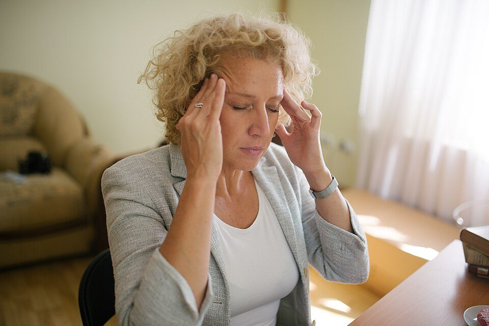

Información divulgativa. No sustituye la valoración de tu equipo médico ni sirve para decidir un tratamiento.


El golpe inicial
Muchas personas describen el momento del diagnóstico como un shock: dejan de escuchar, se sienten fuera de la escena o no se lo creen. En los días siguientes aparecen el miedo, la tristeza, la rabia, la culpa o la sensación de que la vida se ha parado. Son reacciones normales ante una situación anormal.
No hay una forma correcta de sentirse. Algunas personas lloran mucho y otras no; algunas quieren saberlo todo y otras prefieren saber poco a poco. Ambas formas son válidas.
Cómo evoluciona
Las emociones no siguen fases ordenadas. Suelen ir y venir, y se intensifican en algunos momentos:
- La espera de resultados y el estudio de extensión.
- El inicio del tratamiento y los efectos secundarios.
- El final del tratamiento, cuando se reducen las visitas y aparece la sensación de quedarse solo.
- Las revisiones, con la llamada ansiedad del escáner.
- Una recaída o una mala noticia.
Con el tiempo, la mayoría de las personas se adaptan: encuentran formas de convivir con la incertidumbre y recuperan buena parte de su vida.
Malestar normal y problema que necesita atención
Alrededor de un tercio de las personas con cáncer tiene en algún momento un trastorno de ansiedad, depresivo o de adaptación que merece tratamiento específico. Conviene pedir ayuda si:
- La tristeza o la angustia duran más de dos semanas casi todos los días.
- Ya no disfrutas de nada, ni siquiera de lo que antes te gustaba.
- No puedes dormir, comer o concentrarte por la preocupación.
- Evitas las consultas o los tratamientos por miedo.
- Tienes ataques de pánico.
- Piensas en la muerte como salida. En ese caso llama hoy al 024 o al 112.
Lo que suele ayudar
- Información clara y a tu ritmo: pregunta lo que necesites saber y di lo que prefieres no saber todavía.
- Rutinas y actividades que te den sensación de control: caminar, dormir a horas, mantener alguna tarea.
- Compartir lo que sientes con alguien de confianza.
- Evitar el alcohol como forma de calmarse.
- Ejercicio adaptado, que mejora el ánimo y el cansancio.
- Técnicas de relajación, respiración o atención plena.
- Atención psicológica cuando haga falta: no es un signo de debilidad.
Sobre la «actitud positiva»
No hay pruebas de que una actitud positiva cure el cáncer ni de que la tristeza lo empeore. Obligarse a estar siempre animado puede generar culpa. Lo que sí ayuda es sentirse acompañado y tratar la ansiedad y la depresión cuando aparecen, porque mejoran la calidad de vida y la capacidad de seguir el tratamiento.
Ver también: Ansiedad, depresión y miedo a la recaída, Qué es la psicooncología.
Fuentes
- Mehnert A, et al. Four-week prevalence of mental disorders in patients with cancer across major tumor entities. J Clin Oncol. 2014;32:3540-3546. doi:10.1200/JCO.2014.56.0086
- Grassi L, et al. Anxiety and depression in adult cancer patients: ESMO Clinical Practice Guideline. ESMO Open. 2023;8:101155. doi:10.1016/j.esmoop.2023.101155
- National Cancer Institute. Adjustment to cancer: anxiety and distress (PDQ®) (en inglés). cancer.gov